Forma linguística mais comum de conceber o significado:
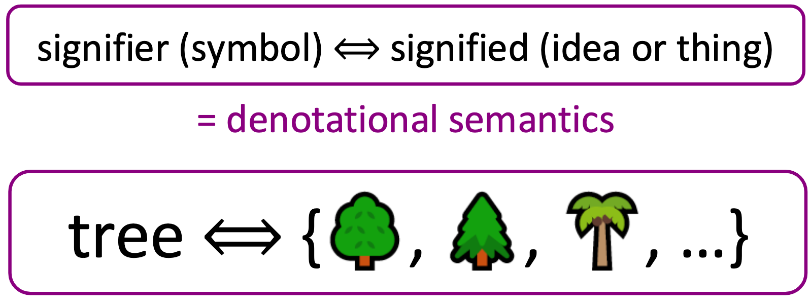
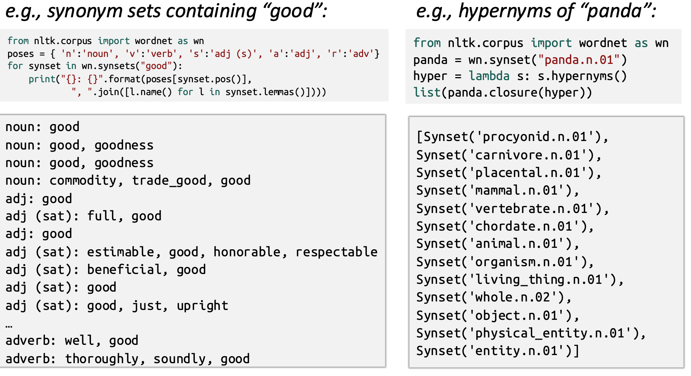
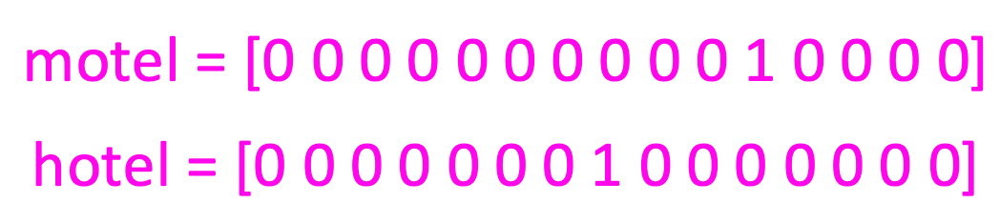
"As mangas podem ser classificadas de várias maneiras"
https://pt.wikipedia.org/wiki/Manga
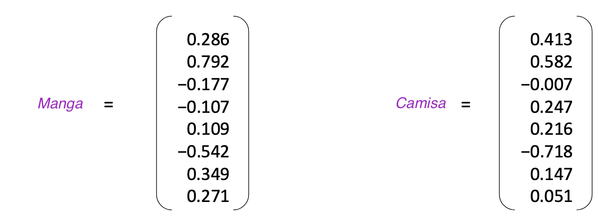
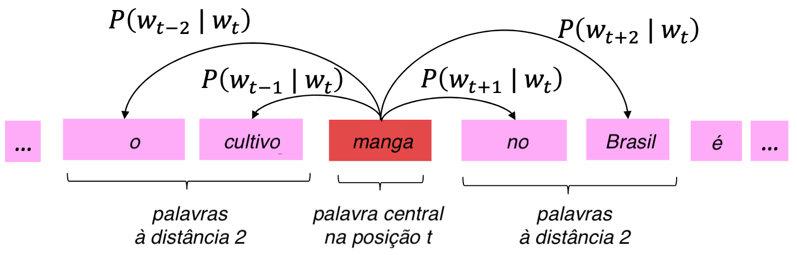
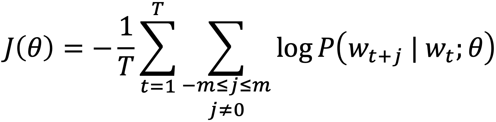
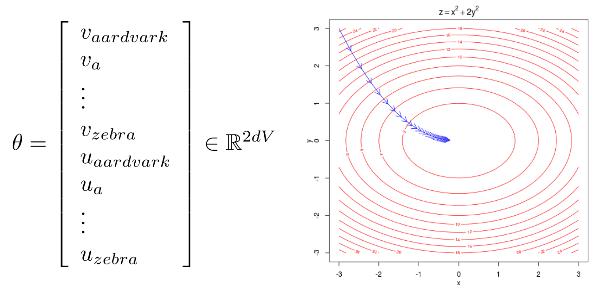
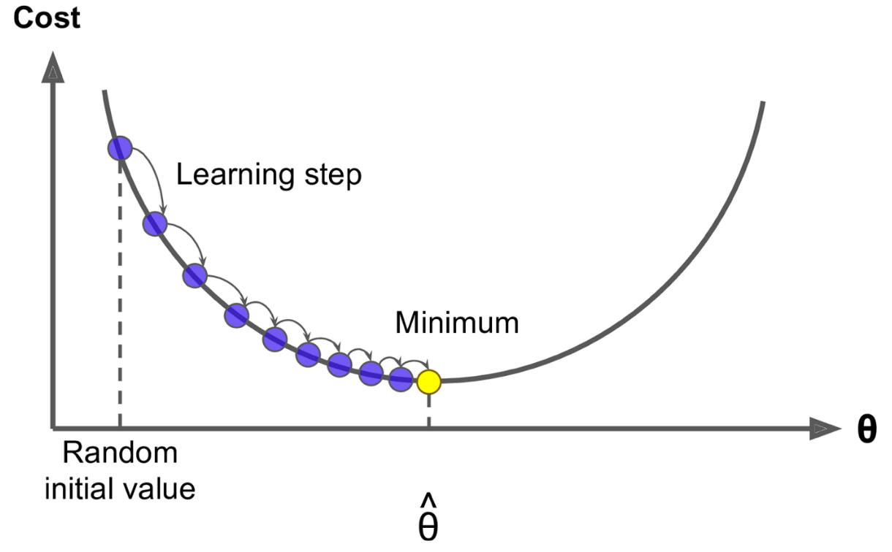
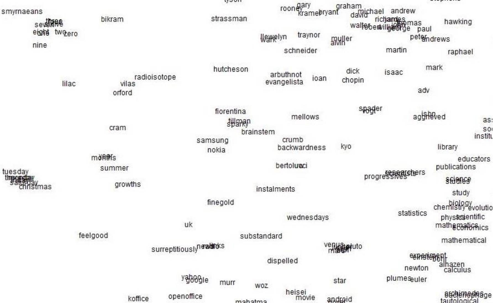
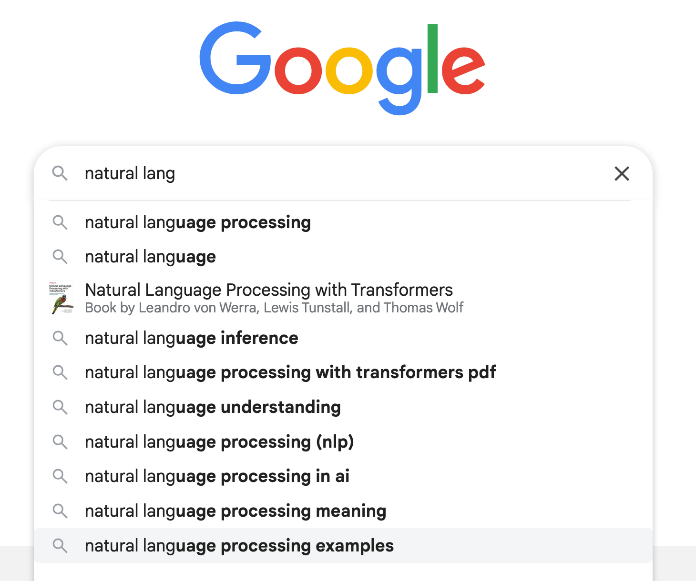
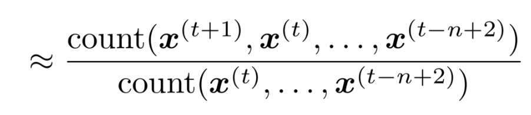
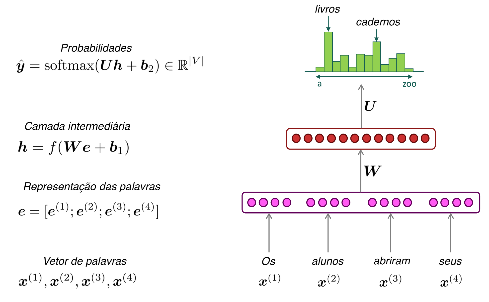
Redes Neurais Recorrentes (RNN)
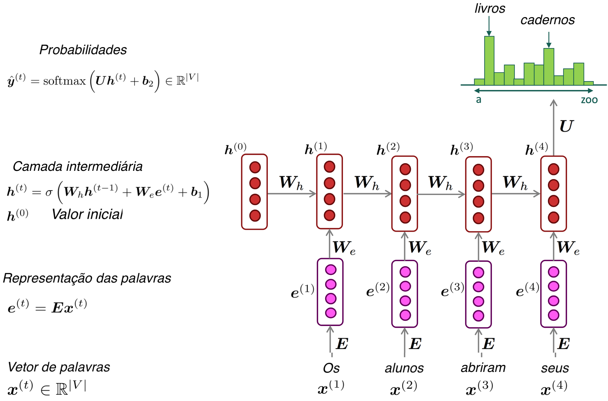
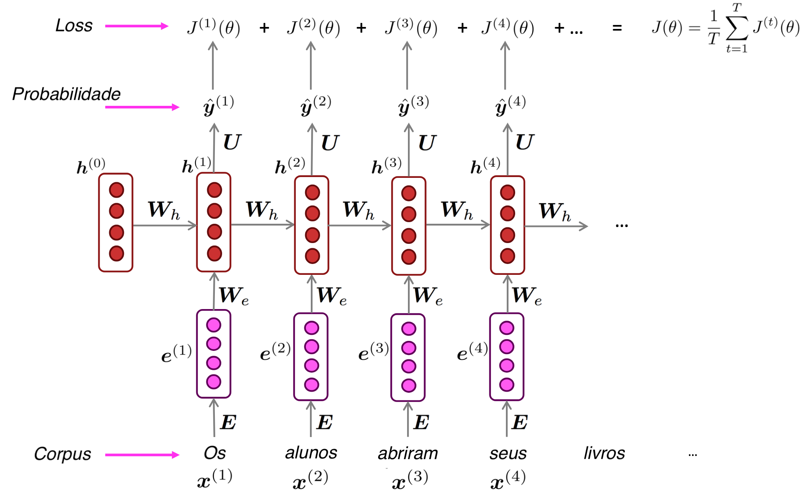
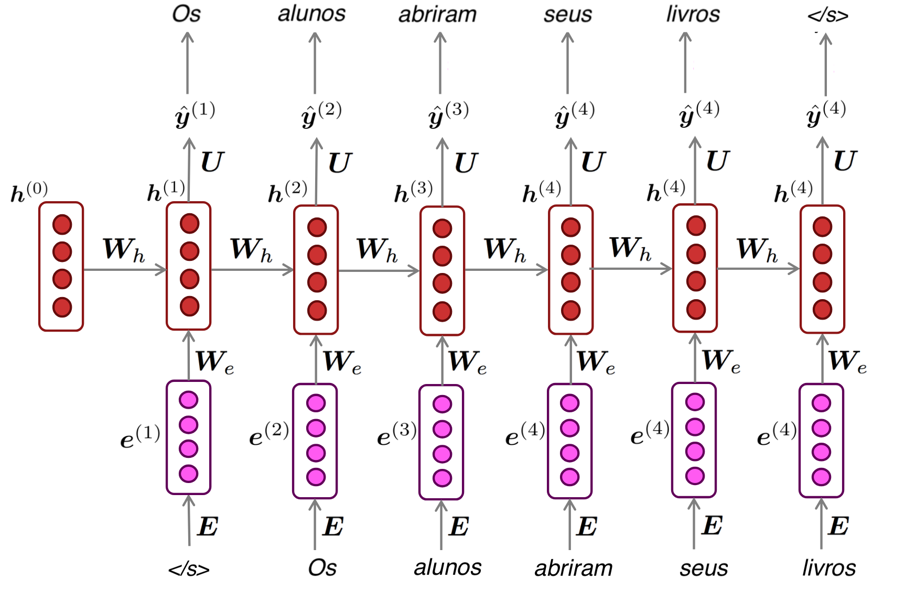
2016: Google Translate usa Tradução por redes neurais
Modelo sequence-to-sequence (seq2seq)
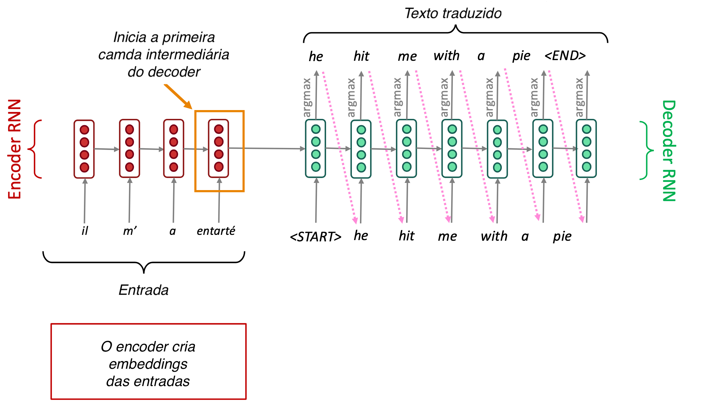
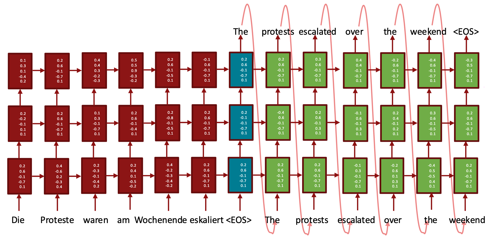